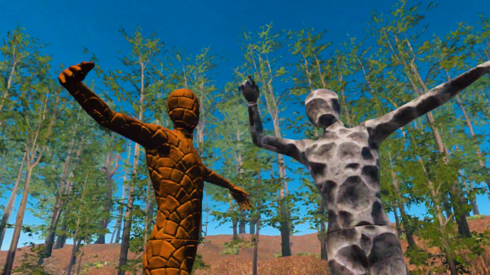
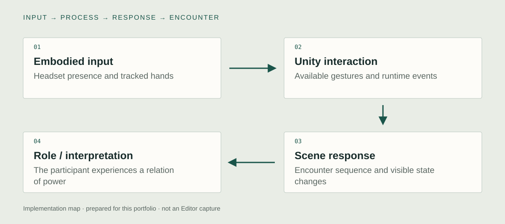

Unity implementation
Hand-tracked input
I connected tracked-hand input to the actions available inside the experience. Touch, pinch, and grab are meaningful because they can change an encounter, rather than simply animate a virtual hand. The important implementation boundary is the transition from a recognized hand action to the response of a specific scene object.

Scene & material responses
I connected the interaction to runtime scene and material states. The visual response is part of the participant's action: a figure or the surrounding encounter changes when the action is accepted. This separates the availability of an input from the consequence that gives it meaning.
Paired VR encounters
NARCI places the participant in a confined encounter, while Be NARCI gives them actions that affect other human-like figures. I built the Unity XR encounters around that change of role. Spatial restriction, the reachable objects, and the resulting responses carry the concept alongside the spoken content.

System & design decisions

- 01Embodied input
Headset presence and tracked hands
- 02Unity interaction
Available gestures and runtime events
- 03Scene response
Encounter sequence and visible state changes
- 04Role / interpretation
The participant experiences a relation of power
Player role is part of the mechanic
The two works change what the participant can do, not only what the dialogue says. Agency and spatial restriction therefore carry the concept.
Hands and consequences
A tracked gesture must connect to an inspectable state change. The archive describes touch, pinch, and grab interactions, with hand-driven changes in the companion experience.
A reflective experience with a clear scope
The work can be framed around healing or self-restoration as an artistic intention. No clinical efficacy, diagnosis, or therapeutic outcome is asserted.
Concept
How does an experience change when the participant moves from receiving control to exercising it?
The pair approaches narcissism through spatial constraint, direct address, and role reversal. NARCI has an intention of reflection and self-restoration. Be NARCI asks the participant to confront the consequences of controlling another figure. These are artistic and experiential aims, rather than evidence of a validated psychological treatment.
Development
Retrospective planning notes, prepared for this portfolio.
Choose the participant's position
Define whether the person receives an encounter or acts on another figure.
Translate the relation into space
Use enclosure, distance, available actions, and consequences as the design material.
Rehearse in the headset
Judge the relation at body scale, including reach, encounter timing, and the visibility of feedback.
Further research
How does role reversal in the same theme change perceived agency and responsibility?
Vary: The participant's available actions and position within the encounter.
Hold consistent: The thematic context, character material, exposure time, and measurement procedure.
Proposed comparison. No controlled study or measured effect is reported.
Documentation
The hand-tracked XR implementation and paired experience are documented. Reflection and recovery remain design intentions, not reported treatment results.
Technical captures to add
Editor and runtime captures still needed to inspect the implementation:
- Hand-tracked input
The hand-input component, its event binding, and the receiving object or script. Perform one gesture slowly and show the corresponding event and visible response together.
- Scene & material responses
The affected object and material beside the component that changes their state. Show the same object before, during, and after one accepted interaction.
- Paired VR encounters
The two scene setups and the objects that receive participant input in each. Record each experience separately so their different interaction rules remain visible.
- Record the actual tracked-hand event and the resulting Unity state. Show input loss and reacquisition if the current implementation supports it.
- Record NARCI and Be NARCI separately to show the different actions available to the participant.